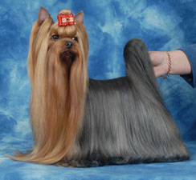

<table border="0" class="layout">
    <colgroup span="1"><col width="15%" span="1"></col><col width="25%" span="1"></col><col width="60%" span="1"></col></colgroup> 
    <tbody>
        <tr>
            <td valign="top">
                <div class="holster">
                    <div class="block_container s3 b-text b-static-text user_css_128160066548" id="e_127779615552">
                        <div class="block_container s3 b-image txt-center" id="e_1282670019256"></div>
                        <div style="text-align: center;" class="block_container s3 b-image txt-center"></div>
                        
                        <div style="text-align: center;" class="block_container s3 b-image txt-center"></div>
                        <div style="text-align: center;" class="block_container s3 b-image txt-center"></div>
                        <div style="text-align: center;" class="block_container s3 b-image txt-center"></div>
                        <div style="text-align: center;" class="block_container s3 b-image txt-center">Наши заводчики:</div></div></div>
                        <div style="text-align: center;" class="block_container s3 b-text b-static-text user_css_12816005438">
                            <p><strong><strong>Бабий Марина -<br /></strong></strong></p>
                        </div>
                        <div style="text-align: center;" class="block_container s3 b-text b-static-text user_css_12816005438"><strong>"Марисабель"</strong>, тел.: 436-65-61</div></div><BR>
                        <div style="text-align: center;" class="block_container s3 b-text b-static-text user_css_12816005438">
                    <p><strong><strong>Петрова Марина -<br /></strong></strong></p>
                        </div>
                        <div class="block_container s3 b-image txt-center" style="text-align: center;"><a href="http://http://www.lolishop.ru/"><strong>"ЛОЛИ ШОП"</strong></div>   
                        </div>
                    <div class="block_container s3 b-image txt-center" id="e_1282670019256">&nbsp;</div>
                </div>
            </td>
            <td>
                <div class="holster">
                    <div class="block_container s3 b-text b-static-text user_css_128160066548" id="e_12826698965">
                        <p style="text-align: center;"><span style="color: #006600;"><span style="color: #0000ff;"><strong>Йоркширский терьер</strong></span></span></p>
                        <p style="text-align: justify;"><span style="color: #006600;"><span style="color: #0000ff;"><strong>Из истории породы:</strong> хотя порода появилась около ста лет назад, её происхождение не вполне ясно. Йоркширов вывели рабочие севера Англии и держали в тайне секрет своего успеха, сохраняя тем самым побочный заработок от продажи собак. Похоже, шотландцы, искавшие работу на сукновальнях Йоркшира, завезли туда различные типы терьеров, включая скай-терьера и ныне исчезнувшего клайдсдейла. Затем их, возможно, скрестили с местными собаками, например с длинношерстным линдским терьером. Не исключено, сто свой вклад в создание породы внесли мальтийская болонка, чёрно-подпалый, манчестерский и денди-динмонт-терьеры. Поначалу йорки были гораздо крупнее, однако отбор и скрещивание самых мелких собак этой породы постепенно привели к её теперешней миниатюре.</span></span></p>
                        <p style="text-align: justify;"><span style="color: #006600;"><span style="color: #0000ff;"><strong>Общая характеристика:</strong> поскольку&nbsp; Йокширский терьер когда-то был выведен для ловли крыс, он обладает живым, пылким характером и не боится ни более крупных псов, ни проникших в дом незнакомцев. Впрочем, он не только хороший сторож, но и необыкновенно ласковый член семьи. Собаки эмоциональные, но держаться с большим достоинством и важностью. О ней говорят, сто "это большая собака в маленьком теле".</span></span></p>
                        <p style="text-align: justify;"><span style="color: #006600;"><span style="color: #0000ff;"><strong>Содержание и уход: </strong>Йоркширский терьер вполне годится для городской квартиры и комнатного содержания, но неутомим и в загородных прогулках. Многих владельцев Йоркширского терьера вполне устраивает взъерошенный вид их собаки, пока они не уверены, что это не в ущерб её чистоте и здоровью. Любителю же выставок предстоит серьёзно потрудиться, поскольку для придания шерсти йоркшира безупречного вида его приходится без конца расчёсывать, мыть шампунем и смазывать маслом. Выставочный Йоркширский терьер , даже в промежутках между рингами, проводит большую часть свой жизни в папильотках. Поэтому собака предназначенная для шоу карьеры ограничена и в гулянии - "Боже упаси нахватать колтунов, репейника , поранить лапку или повредить&nbsp;красивую стрижку". Но если Ваш <strong>Йоркширский терьер</strong> просто друг и член семьи -то ему позволяется всё -так как Йоркширский терьер всегда воспринимается как маленький ребёнок. </span></span></p>
                        <p style="text-align: justify;"><span style="color: #006600;"><span style="color: #0000ff;"><strong>Размеры:</strong> вес шоу собак - до 3,2 кг. <br /></span></span></p>
                        <p style="text-align: justify;"><span style="color: #006600;"><span style="color: #0000ff;">_____________________________________________</span></span></p>
                        <p style="text-align: justify;"> </p>
                    </div>
                </div>
            </td>
        </tr>
    </tbody>
</table>​
